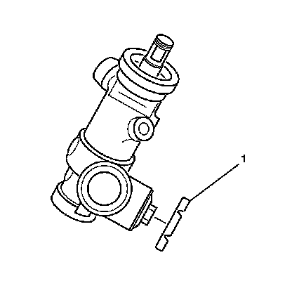

Steering Gear Rack Bearing Preload Adjustment - Off Vehicle
Steering Gear Rack Bearing Preload Adjustment - Off Vehicle

1. Loosen the adjuster plug lock nut (1).
2. Turn the adjuster plug clockwise until the adjuster plug bottoms in the gear assembly.
3. Turn the adjuster plug back 50 degrees to 70 degrees (approximately one flat).
Notice: Refer to Fastener Notice.
4. Install the adjuster plug lock nut (1) to the adjuster plug.
Hold the adjuster plug stationary while tightening the adjuster plug lock nut (1) to 68 N.m (50 lb ft).